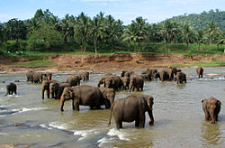

kandy
Botanical/zoological gardens
Herd of elephants at Pinnawala Elephant Orphanage
The country has six botanical gardens and four Zoological gardens. The botanical gardens are maintained by the Department of National Botanical Gardens, and the zoological gardens are maintained by the Department of National Zoological Gardens. The gardens have become attractive places among local and foreign visitors.
Botanical Gardens
Royal Botanical Gardens · Hakgala Botanical Garden · Henarathgoda Botanical Garden · Mirijjawila Botanical Garden · Seetawaka Botanical Garden · Ganewatta Forest Medicinal Herbal Botanical Garden
Zoological Gardens
National Zoological Gardens · Pinnawala Elephant Orphanage · Pinnawala Open Zoo · Ridiyagama Safari Park
Heritage
Heritage tourism involves visiting historical sites. Sri Lanka is very rich in pre-historic, proto-historic, and historic monuments, which bespeak its ancient civilization and culture. Mainly Buddhism has influenced in moulding the cultural heritage of the country. The historic period of Sri Lanka proper starts at circa 236 B.C. with the introduction of Buddhism to the country by the missionaries sent by the Indian empire Asoka.
The UNESCO has declared six archaeological and two ecological World Heritage Sites in the country. Beside the world heritage sites the government of Sri Lanka has declared a number of archaeological protected sites and monuments within the country.
World Heritage Sites
Anuradhapura · Central Highlands of Sri Lanka · Dambulla cave temple · Galle · Polonnaruwa · Sigiriya · Sinharaja Forest Reserve · Temple of the Tooth